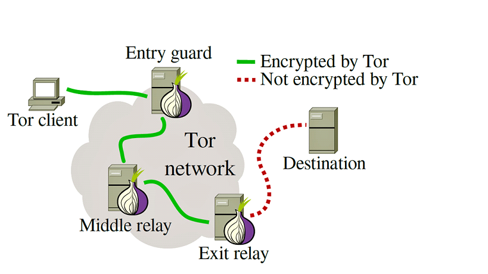

Soukromí na Internetu
"Nemám před vámi co skrývat, ale to neznamená že o mě musíte vše vědět"
"Soukromí je nezbytnou součástí svobody"
Reklamy a sledovací prvky
- Sledovací prvky mají za úkol zjistit o vás co nejvíc, aby se vám pak mohli ukazovat reklamy na něco co vás zajímá a koupili si to.
- Nejlepší kombinace pro zabránění sledování a reklam jsou doplňky do prohlížeče: uBlock Origin, Decentraleyes a ClearURLs
- Reklamy se nachází i v systému Windows:
- Na zamykací obrazovce
- neodstranitelný Microsoft Edge
- Doporučené aplikace ve Start menu
- reklamy na office
- kompletní list Windows zabudovaný reklam zde
- Blokování reklam pomocí DNS
- Funguje pomocí zamítnutí přeložení URL na IP adresu reklamových serverů
- Bezpečné DNS s blokováním reklam: AdGuard DNS a NextDNS
Prohlížeče
- Dobré
- Firefox - Při správném nastavení nejlepší prohlížeč
- LibreWolf - Založený na Firefoxu, lepší výchozí nastavení
- Tor - Založený na Firefoxu, připojuje se k internetu pouze přes počítačovou síť Tor, více věcí později
- Špatné
- Chrome - zabudované sledovací prvky, založený na Chromiu, takže žere hodně paměti, od června 2024 přestane podporovat Manifest V2 (blokování reklam bude velmi omezené)
- Edge - všechny problémy Chromu, ale je od Microsoftu a horší
- Opera - čínská kopie Chromu, kromě sledovacích prvků Googlu má i mnohem horší čínské
- Safari - zabudovaný prohlížeč Applu, používá Apple WebKit, není úplně nejlepší, ale pořád lepší než Chromium
Apple nutí webové prohlížeče na jejich zařízeních používat taky WebKit místo vlastního, takže na iPhonech není v prohlížečích velký rozdíl
Vyhledávače
- Dobré
- StartPage - Kvalita vyhledávání stejná jak u Googlu, ale je bez sledovacích prvků, neskladuje a nepoužívá vaši historii vyhledávání na personalizované reklamy
- SearX - Docela dobrý vyhledávač, který má volně dostupný zdrojový kód, stojí za ním jednotlivci a ne velké společnosti jako u ostatních
- DuckDuckGo - Nejznámější vyhledávač respektující soukromí, kvalita vyhledávání stejná jak u Bingu, žádné sledovací prvky a neskladuje vaši historii vyhledávání, doporučený pro použití s prohlížečem Tor
- Špatné
- Google - Prohlížeč provozován největší reklamní společností na světě, kvalita vyhledávaní je dobrá, ale používá vaši historii vyhledávání k personalizovaným reklamám a navždy ji skladuje, je to jedna z nejhorších kombinací při použití s prohlížečem Chrome
- Bing - Prohlížeč provozován Microsoftem, vyhledávání je používatelné, ale má stejné problémy jako Google, namísto Googlu odesílá vaše data Microsoftu, je to jedna z nejhorších kombinací při použití s prohlížečem Edge
- Yahoo - Téměř zapomenutý prohlížeč, kvalita vyhledávání i problémy podobné Bingu
Prohlížeč a síť Tor
Jak funguje?
- Prohlížeč Tor se při startu připojí ke třem náhodným serverům sítě Tor
- Vytvoří si tři dvojice soukromých a veřejných klíčů pro AES šifrování a každému serveru pošle jeden
- Při odeslání požadavků webové stránce zašifruje data všemi třemi klíči a pošle ho prvnímu serveru, který svým klíčem část jednu vrstvu odšifruje a to mu ukáže pouze, kterému serveru to má odeslat a takhle to pokračuje až do posledního serveru, který zjistí, že je požadavek odšifrován a odešle ho serveru. Pokud cílový server používá příponu .onion se požadavek přenáší pouze přes Tor, jinak není od posledního serveru chráněn. Na odkrytí identity uživatele Toru musí útočník vlastnit upravenou verzi všech tří serverů Toru (v dnešní době je jich přes 8 000)
- Video které podrobněji popisuje Tor
Proč se používá?
- Kompletně skryje identitu jeho uživatele
- Z pohledu odposlouchávačů vypadají všichni uživatelé stejně, protože i sám prohlížeč má velmi efektivní opatření, proti vytvoření digitálního otisku
- Většina jeho uživatelů jsou lidé, kteří se zajímají o své soukromí, nebo provozují/používají černý trh
Co na .onion stránkách najdete
- Plno nefunkčních stránek
- Normální stránky, které mají verzi pro Tor uživatele
- Černý trh
- Úniky dat

Proč nepotřebujete VPN
- VPN pouze skryje vaši IP adresu a chrání data před ostatními pouze v části od vašeho počítače po VPN server. Část od VPN serveru po webovou stránku NENÍ chráněna!
- Provozovatel VPN služby vidí co posíláte
- Nechrání vás před vašim poskytovatelem internetu, ani Routerem, protože v 99% používáte jeho DNS na přeložení URL na IP adresu
- Provozovatelé VPN služeb často platí Youtuberům za reklamy ve videjích, kde výměnou za obrovské množství peněz řeknou jak strašně jste bez VPN ohroženi a jak vám "každý na veřejné WiFi může vzít všechna hesla" což není pravda, protože všechny stránky až na pár velmi starých používají zabezpečené HTTPS spojení
- Jediný dobrý důvod proč používat VPN je BitTorrent
- Video které tohle rozebírá
Zpět na hlavní stránku